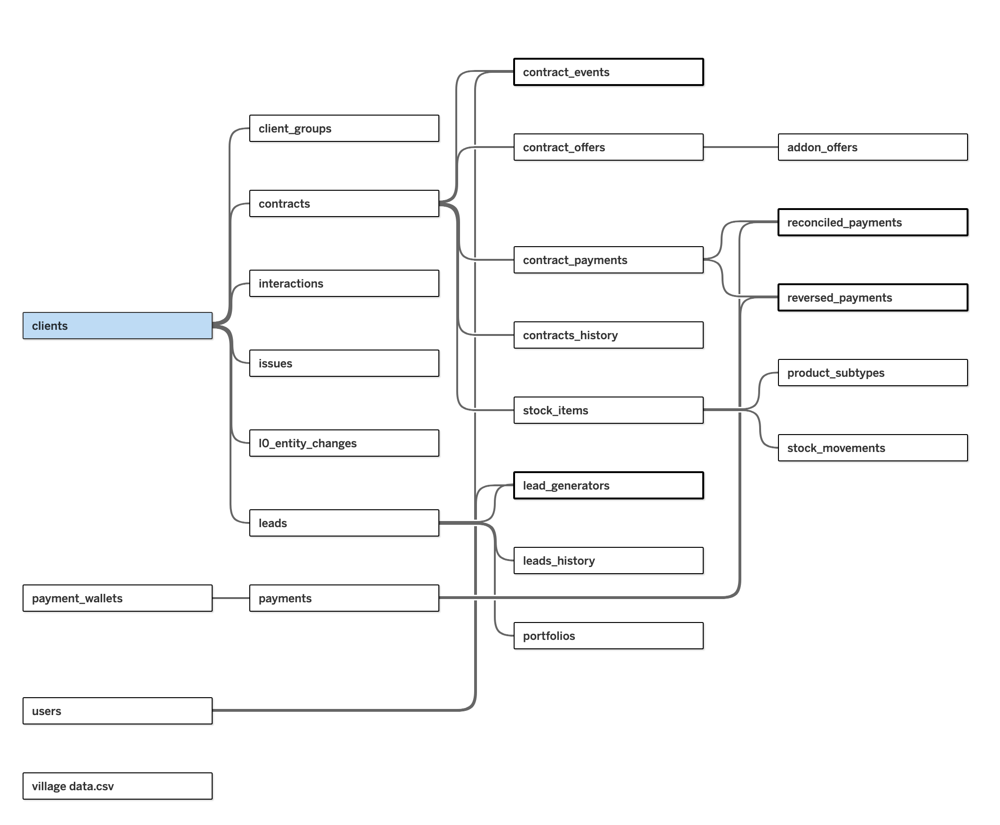

Rebuilding a join path that didn't exist
ResultRebuilt the missing payment-to-agent link in an undocumented database, showed the top collector by volume was not the top performer by success rate, and delivered a success-rate KPI framework to client leadership.
The question the client wanted answered was simple: which of our field agents are actually
performing? The obstacle was not analytical. It was that the payments table's
user_id column was empty for every single row — so there was no way to
connect a payment to the agent who had brought that customer in. The database also arrived with
no data dictionary and no ER diagram.
Reconstructing that link was the project. I wrote profiling scripts to generate the missing data
dictionary table by table, then inferred the foreign keys programmatically — scanning for
*_id columns shared between tables and treating an overlap of five or more values as
a candidate relationship, then rendering the result as an ER graph with networkx. Agent names were
spelled inconsistently across tables, so I normalized them with NFKD to strip accents and built a
canonical name map on top. In Tableau I duplicated the users and
lead_generators tables to complete a join path that the schema could not otherwise
express. Every relationship I inferred, I checked against row counts and sampled records before
building on it.


payments → leads → lead_generators: rebuilding it is what made agent-level analysis possible at all.
Open full size ↗Payment success rate by field agent
Two things I chose not to do are the parts I'd defend hardest. There were only about fifteen agents and seven with meaningful transaction volume, so after trying exploratory clustering I dropped it — the sample could not support a model, and a descriptive KPI framework with explicit business rules was the honest answer. And the language field, which mattered because the client serves Wayuunaiki-speaking communities, was populated for 3 of 932 customers. Rather than analyze it anyway, we wrote "start collecting village-level language data" into the recommendations.